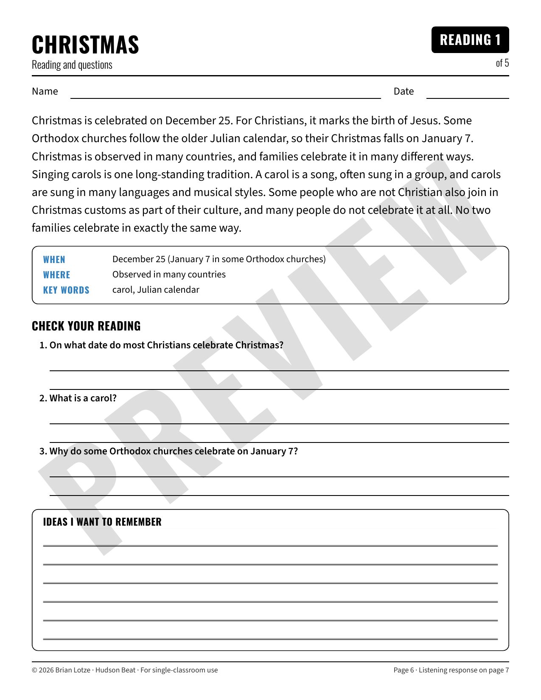
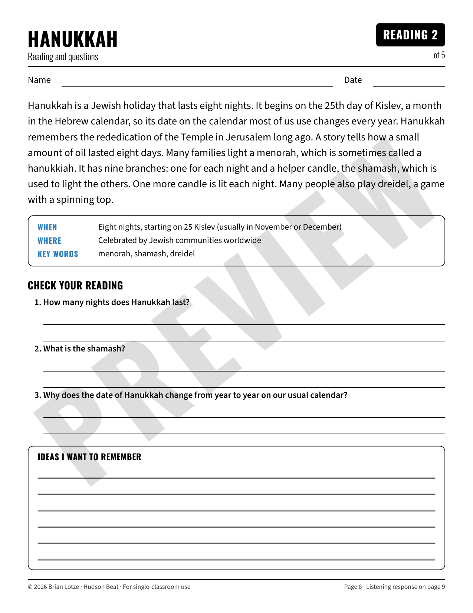
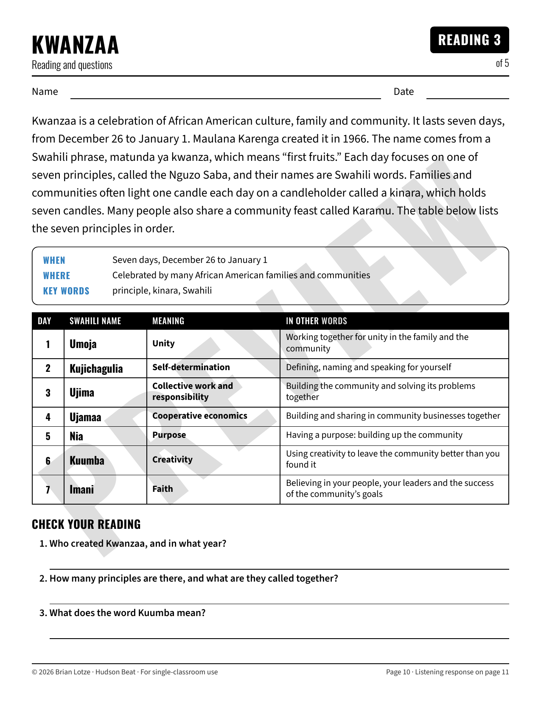
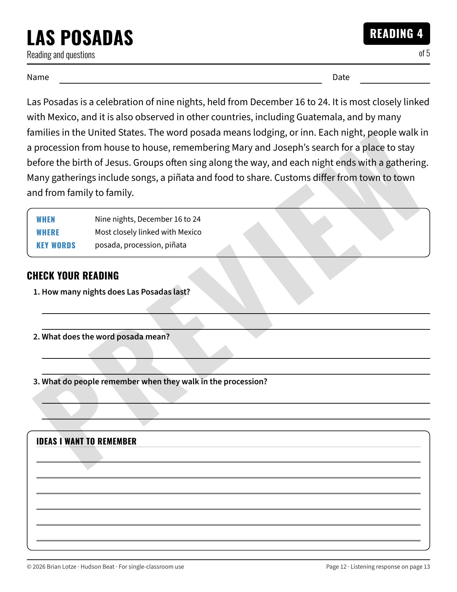
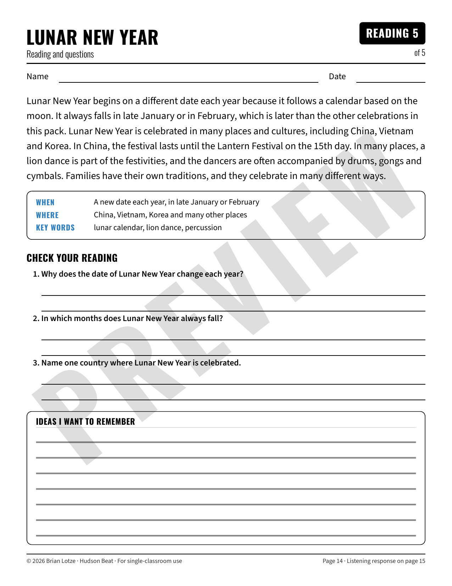

Hudson Beat
5 celebrations
One reading for each, written for grades 3–6

Christmas
Late December

Hanukkah
Eight nights

Kwanzaa
December 26 to January 1

Las Posadas
December 16 to 24

Lunar New Year
January or February
5 readings
·
facts kept simple
·
grades 3–6